Тачки
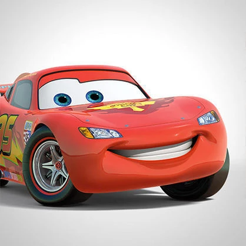
Молния Маккуин с номером 95 на борту — легендарный гоночный болид, который обожает скорость. Этот дерзкий и целеустремлённый автомобиль проделал сложный путь от перспективного новичка до четырёхкратного обладателя Кубка Большого Поршня.
Своего чемпионского титула Маккуин добился благодаря поддержке верных друзей из Радиатор-Спрингс, маленького городка, которому звезда автогонок вернул популярность и постоянный поток туристов. В перерывах между чемпионатами он очень любит проводить время со своим лучшим другом Мэтром и красоткой Салли.
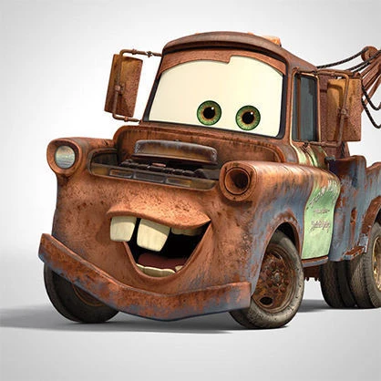
Мэтр — самый ржавый и самый надёжный эвакуатор в Радиатор-Спрингс, который гордится каждой царапиной и вмятиной на своём кузове. Он обожает пугать тракторов на полях, помогать застрявшим на трассах машинам и весело проводить время со своим лучшим другом Молнией Маккуином.
С тех пор, как Радиатор-Спрингс обрёл бешеную популярность у туристов, ржавый эвакуатор Мэтр перепробовал себя во множестве амплуа, снискал успех в роли непревзойденного рассказчика и закрепил за собой статус самого душевного жителя города.
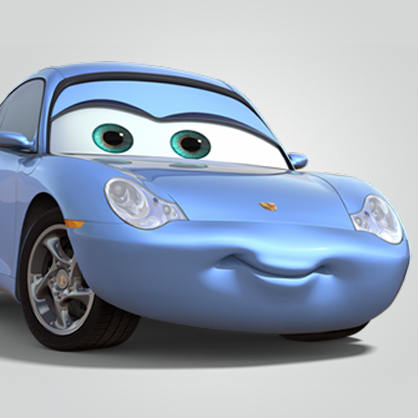
Красотка Салли — синяя Порше 911 Каррера 2002 года выпуска. Салли переехала в городок Радиатор-Спрингс, отказавшись от перспективной карьеры адвоката, и теперь возглавляет местный мотель «У Колеса и Конуса».
Салли также принадлежит пламенный мотор Молнии Маккуина, правда, за внимание возлюбленного, который большую часть времени проводит на соревнованиях, ей частенько приходится бороться с его лучшим другом Мэтром!
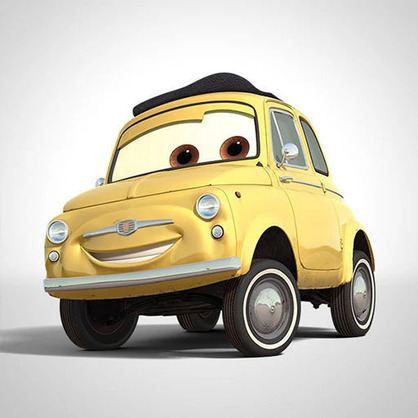
Луиджи — добросердечный и жизнерадостный желтый Фиат 500 1959-го года выпуска. Хотя Луиджи родом из Италии, он живет в Радиатор-Спрингс, где заправляет магазинчиком «Каса Делла Шина». Луиджи — настоящий патриот своей родной страны и фанатеет от всего итальянского, особенно от машин марки «Феррари».
Луиджи отлично разбирается в покрышках и вместе со своим помощником Гвидо является постоянным и незаменимым участником команды знаменитого автогонщика Молнии Маккуина.
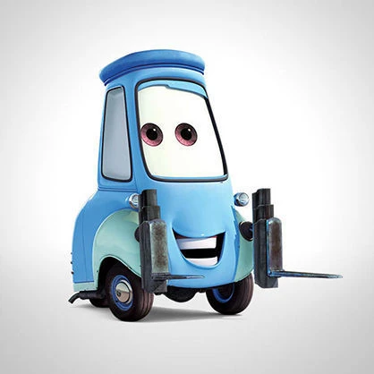
Гвидо — миниатюрный итальянский погрузчик, на котором держится большая часть работы в «Каса Делла Шина». Он — незаменимый помощник и лучший друг Луиджи. И оба они — самые большие фанаты гоночных машин марки «Феррари» во всём Карбюраторном Округе!
Единственное слово, которое Гвидо знает по-английски, — «пит-стоп». Именно эту важную и ответственную работу он выполняет в команде Молнии Маккуина, помогая автогонщику сэкономить драгоценные доли секунд и стать чемпионом!
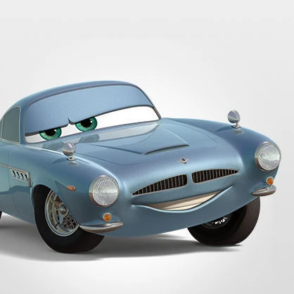
С его острым умом, мгновенной реакцией и высочайшей манёвренностью Финн Макмисл, без преувеличения, — один из лучших шпионов в мире! Он много лет несёт секретную службу и постоянно имеет дело с опытными разведчиками и злодеями международного масштаба.
Финн — настоящий профессионал и знаток своего дела. В работе он использует множество хитроумных приспособлений, которые скрываются под его элегантным корпусом. А еще Финн — обладатель первоклассной интуиции, которая никогда его не подводит! Ну, почти никогда…
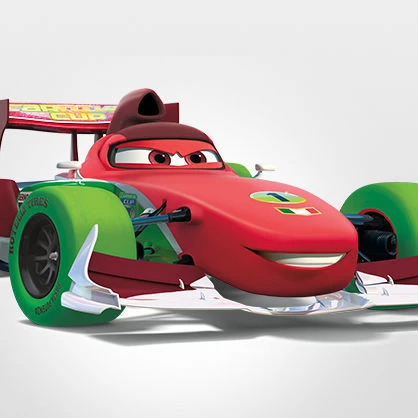
Франческо Бернулли — главный соперник Молнии Маккуина в борьбе за кубок мирового гран-при. Франческо с самого детства мечтал стать знаменитым гонщиком! Он вырос в Италии, около знаменитого автодрома города Монца, — одной из старейших гоночных трасс.
Франческо гордится своим чемпионским титулом — даже на его капоте красуется #1. У гонщика множество поклонниц, которые с ума сходят по его открытым колёсам. Впрочем, Франческо Бернулли любит лишь самого себя, и все его мысли заняты только победой в гонке.
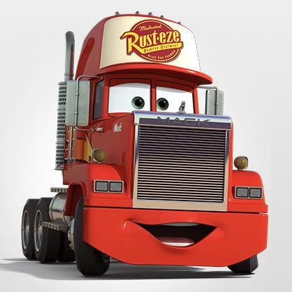
Мак — верный друг и помощник Молнии Маккуина. Это огромный трейлер марки Мак-Супер-Лайнер, работа которого заключается в доставке гонщика к месту соревнований.
Несмотря на преклонный возраст, Мак отлично справляется с обязанностями. Он умеет находить общий язык со своим своенравным другом и всегда готов поддержать юного гонщика советом. Спокойствие и рассудительность Мака не раз выручали Молнию Маккуина: чувствуешь себя гораздо увереннее, если можешь заручиться поддержкой такого большого и опытного товарища!
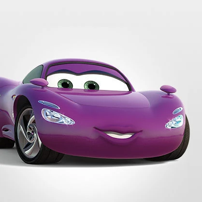
Холли Делюкс — очаровательная сотрудница британских спецслужб, которая проходит стажировку в Токио. Холли совсем недавно закончила академию разведки, где была одной из лучших учениц, и поэтому знает теорию назубок.
Однако смелая красотка рвётся в бой, желая скорее обезвредить злодеев и показать всему миру свои уникальные знания и способности. Под изящным капотом Холли скрывается самая современная профессиональная шпионская техника от закамуфлированного оружия до голографического дисплея!
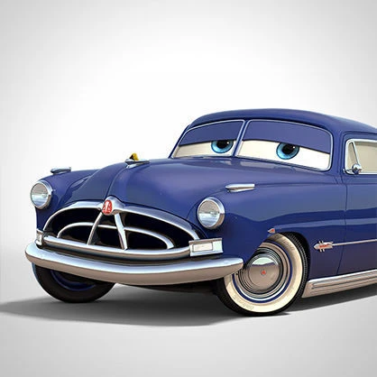
Благодаря своей безупречной репутации, спокойному характеру и рассудительности, Док Хадсон – один из самых уважаемых жителей Радиатор-Спрингс. Спорить с ним практически невозможно, ведь он всегда на все сто уверен в своей правоте. Жители городка часто обращаются к Доку Хадсону за советом…
Вот только кто же он на самом деле: уважаемый судья и доктор из маленького городка или удивительный герой с тайной историей и необычным прошлым, о котором он совсем не любит говорить?..
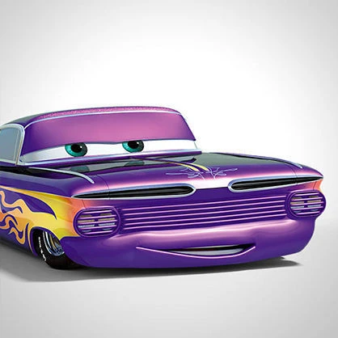
Рамон — шевроле импала 1959-го года выпуска, один из жителей маленького городка Радиатор-Спрингс. По-настоящему увлечённый своим делом, он открыл собственную «Мастерскую боди-арта Рамона» и всю жизнь посвятил развитию своего художественного таланта.
Рамон признается, что из-за отсутствия клиентов ему приходилось много практиковаться на самом себе, и было время, когда он перекрашивал свой кузов едва ли не каждый день! Зато теперь Рамон — самый популярный мастер боди-арта, к которому постоянно выстраивается очередь из заказчиков!
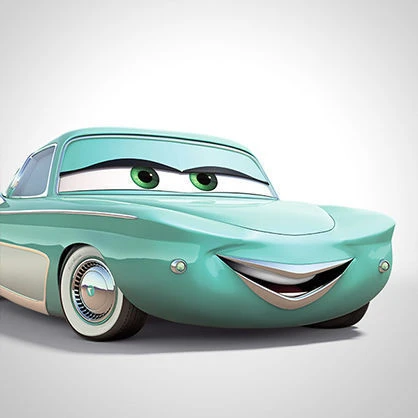
Дерзкая и прямолинейная Фло – жительница Радиатор-Спрингс. Фло – хозяйка местного Кафе Фло V-8, которое славится самым качественным бензином во всем карбюраторном округе.
Но даже у этой уверенной в себе дамы есть свои слабости! В далёких 50-х, когда юная красотка Фло колесила по стране в поисках счастья, она случайно встретилась фарами с Рамоном и не смогла проехать мимо!